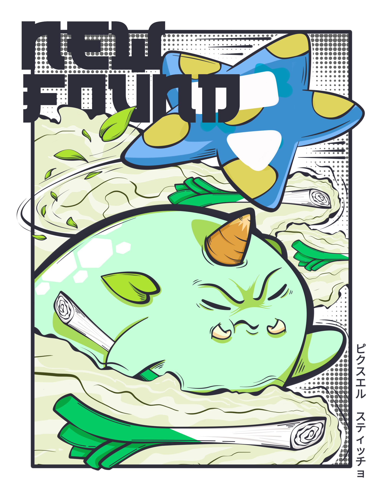
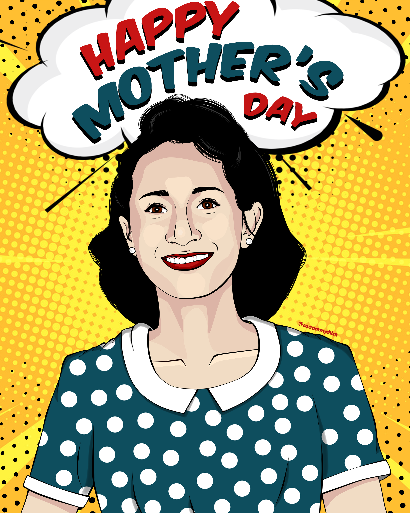
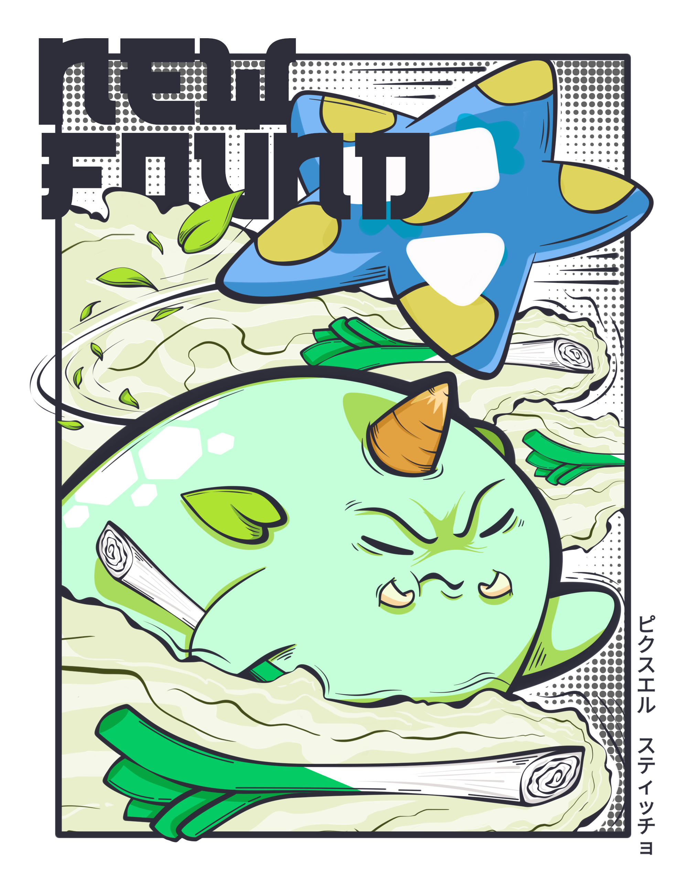
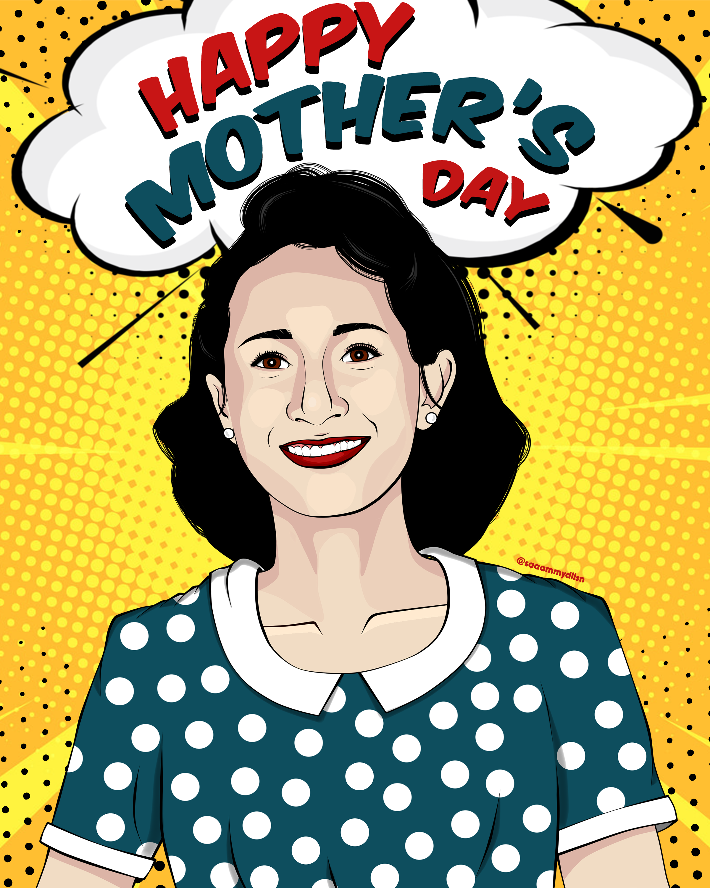

SAMANTHA'S
PROFILE
Name: Samantha Shane C. Dollesin
Nickname: Shane
Favorite CMSC Subject so far and why: CMSC 22 because I was able to create my first games there and I was also able to utilize my design skills which I always look forward to doing in every subject.
Favorite GE so far and why: Ethics 1 because our discussions were always very insightful, but also because I just like learning philosophical concepts in general.
Favorite programming language and why: If HTML and CSS were programming languages, it would be those two. But since they aren't, I believe my favorite so far would be Java.
Favorite food: Instant noodles or anything pasta
Hobbies: Digital art, Graphic design, Film making, Crocheting, Gaming, Watching movies, Listening to music, Petting my cat
Childhood dream: I wanted to be a cosmonaut and to work for NASA, but I realized as I grew older that it wasn't as easy as I thought it would be.


 


